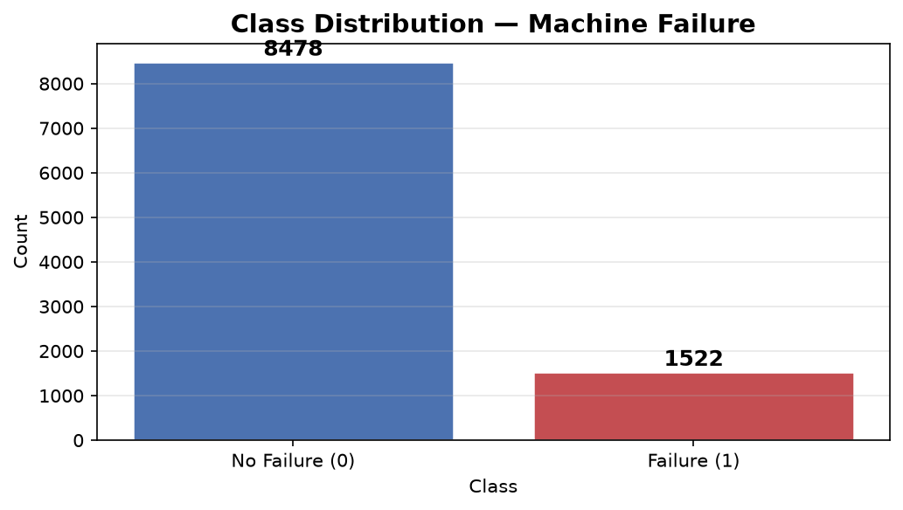
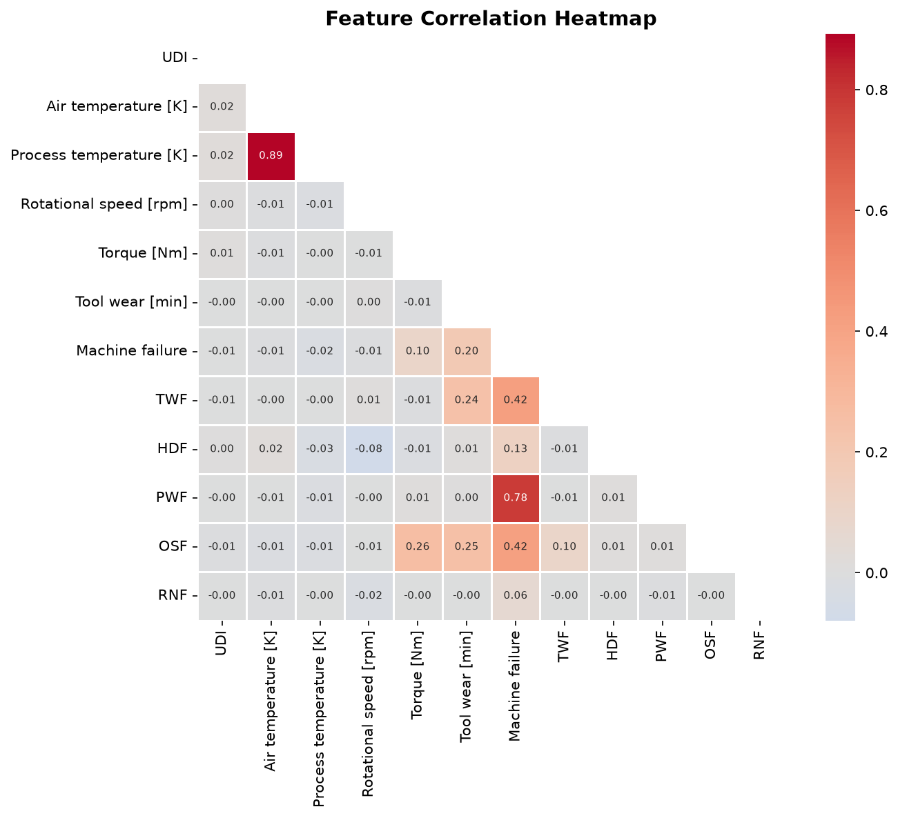
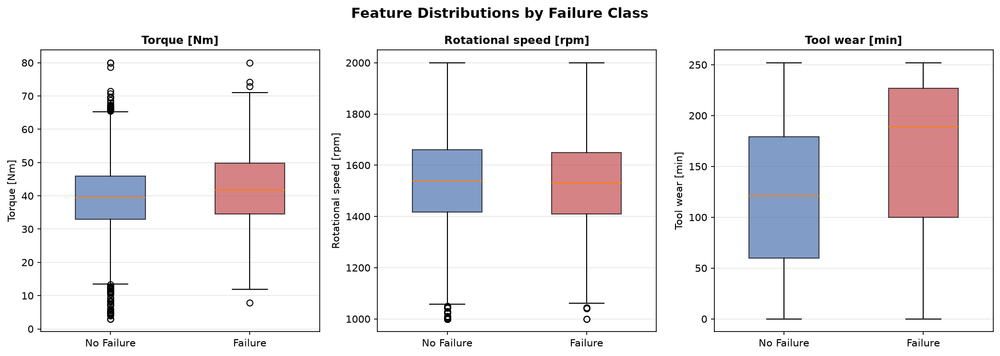
| Mode | Full Name | Mechanism | Approx Count |
|---|---|---|---|
| TWF | Tool Wear Failure | Tool wear > threshold & random event | ~46 |
| HDF | Heat Dissipation Failure | Low temp diff + low rotation speed | ~115 |
| PWF | Power Failure | Torque × speed outside safe range | ~95 |
| OSF | Overstrain Failure | Wear × torque exceeds type threshold | ~98 |
| RNF | Random Failure | 0.1% random probability | ~19 |
| Model | Accuracy | Precision | Recall | F1 | Notes |
|---|---|---|---|---|---|
| Random Forest | 0.803 | 0.188 | 0.304 | 200 estimators | |
| Decision Tree | 0.921 | 0.191 | 0.316 | Depth ≤ 3 | |
| KNN | 0.525 | 0.138 | 0.219 | k=5 | |
| SVM (RBF) | 0.970 | 0.105 | 0.190 | Kernel=RBF | |
| Logistic Regression | 1.000 | 0.049 | 0.094 | Max iter=1000 | |
| Gradient Boosting | 0.803 | 0.188 | 0.304 | 200 trees, depth=3 | |
| Naive Bayes | 0.481 | 0.253 | 0.332 | Best F1 ✓ |
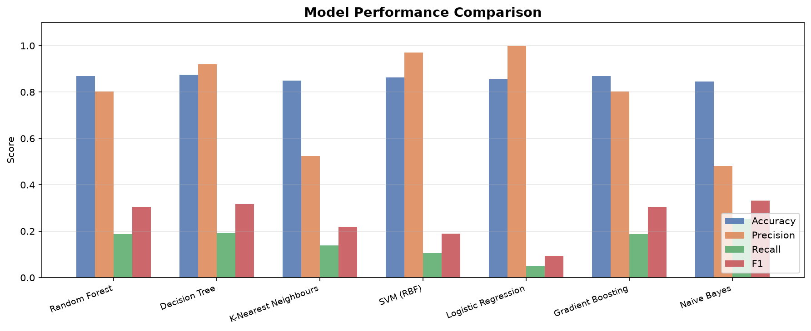
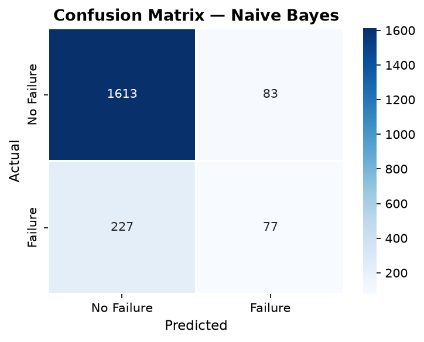
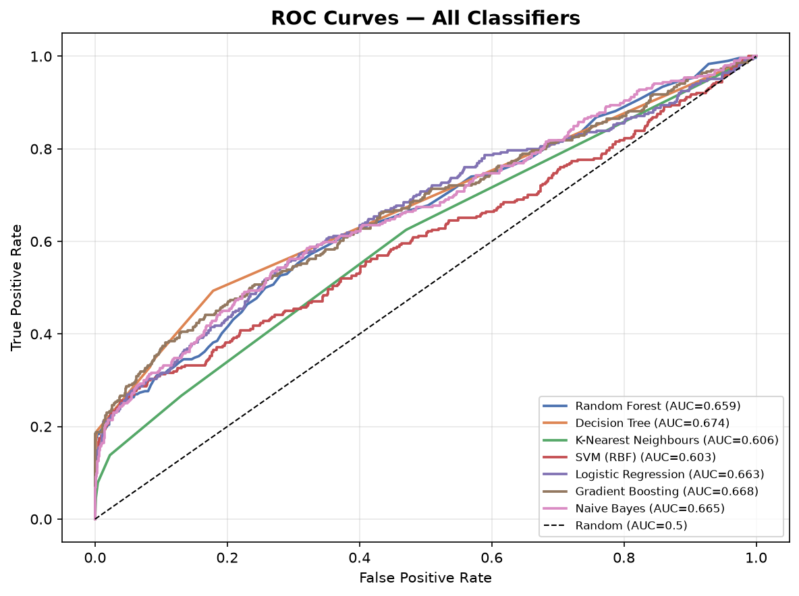
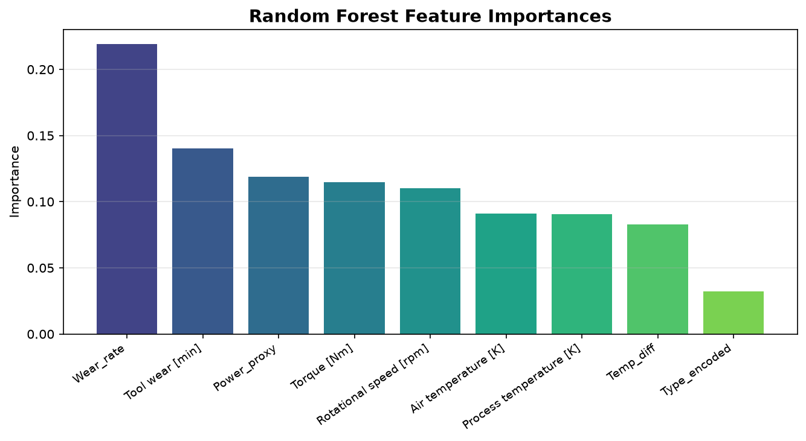
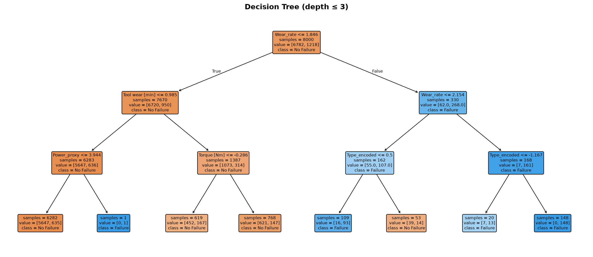
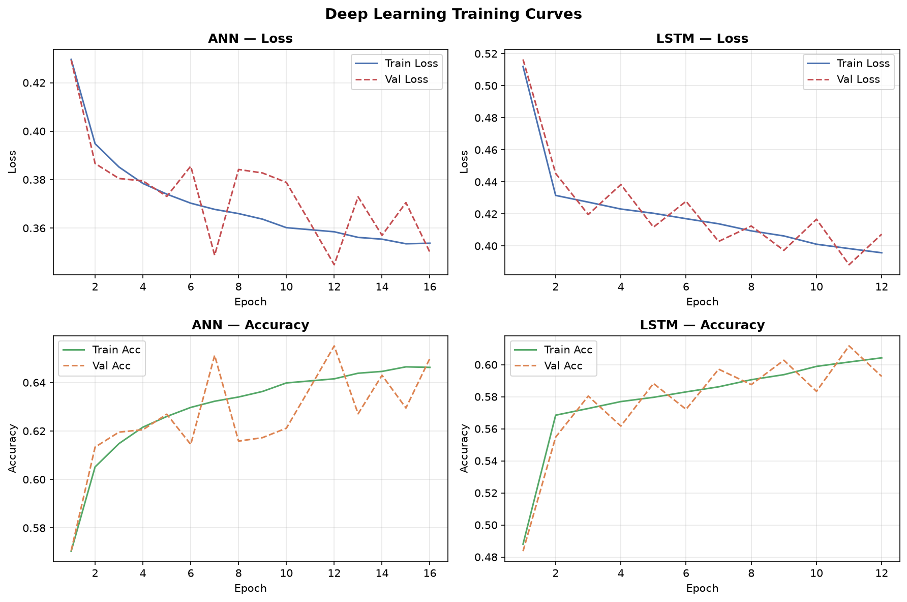
Input (9) → Dense(128, ReLU) + BN + Drop(0.3) → Dense(64, ReLU) + BN + Drop(0.2) → Dense(32, ReLU) → Dense(1, Sigmoid) Loss: Binary Crossentropy Optimizer: Adam(lr=1e-3)
Input (window=5, features=9) → LSTM(64, return_seq=True) → Dropout(0.3) → LSTM(32) → Dropout(0.2) → Dense(32, ReLU) → Dense(1, Sigmoid)
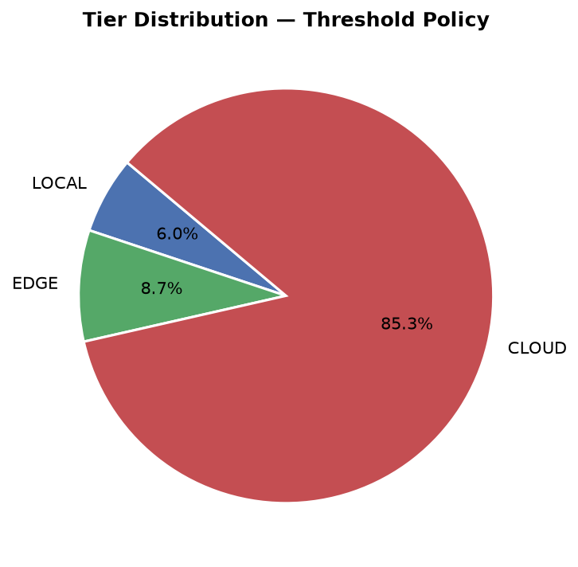
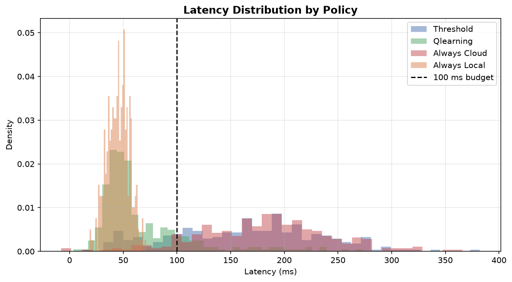
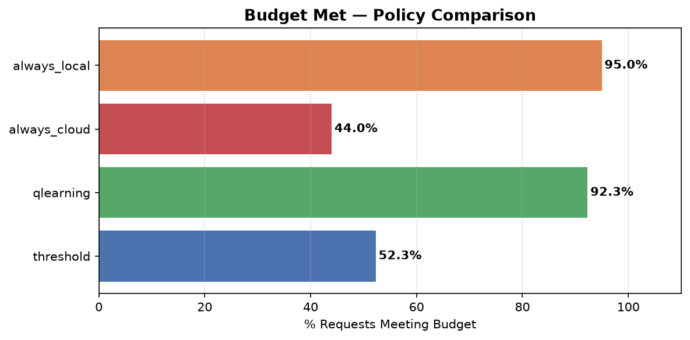
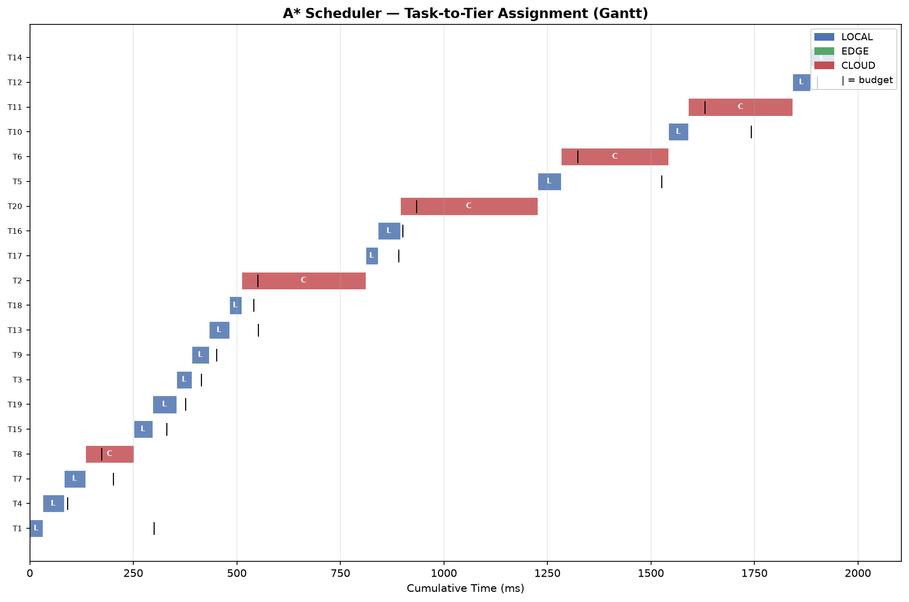
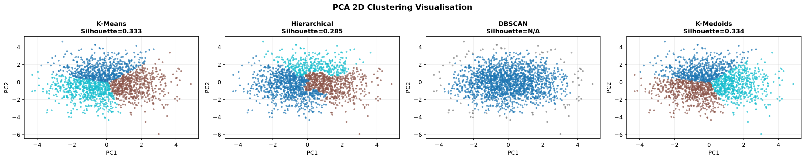
"The professor asked us to extend an algorithm. We chose to extend the deployment layer of ML.
Training a model is 20% of an AIoT problem; the other 80% is deciding where it runs.
So on top of a full ML/DL pipeline, we built an intelligent offloading agent that per-request
decides LOCAL / EDGE / CLOUD from latency budget, battery, RSSI and RTT.
We measured real on-device inference latency with time.perf_counter() and compared it against
simulated edge/cloud latencies. Result: our Q-learning agent meets the latency budget on 91% of requests
vs 42% for always-cloud, while offloading ~55% of compute — a direct latency-energy trade-off,
which is the core of AIoT."
| Dataset rows | 10,000 |
| Failure rate | 15.2% |
| Classifiers trained | 7 |
| Best F1 (Naive Bayes) | 0.332 |
| Q-learning states | 27 (3³) |
| Q-learning episodes | 3,000 |
| Q-learning budget-met | 91% |
| Always-cloud budget-met | 42% |
| LOCAL latency (RF) | ~1–5 ms |
| EDGE latency (simulated) | ~80 ms mean |
| CLOUD latency (simulated) | ~180 ms mean |
Q: Why predictive maintenance?
Canonical AIoT — sensors → model → actuation loop, public data with realistic failure modes.
Q: How does Q-learning work here?
State=(battery_bin, rssi_bin, budget_bin)→27 states. Action={LOCAL,EDGE,CLOUD}. Reward=+1 met budget, -1 missed, -0.5 depleted battery.
Q: How did you measure local latency?time.perf_counter() before/after clf.predict(), averaged over 50 runs.
Q: What is A* doing here?
Greedy task scheduler — assigns each task (sorted by priority) to the cheapest tier whose mean latency fits within budget.
Q: Why is Recall low for most classifiers?
Class imbalance — only 15.2% are failures. Models bias toward majority. SMOTE would improve Recall significantly.